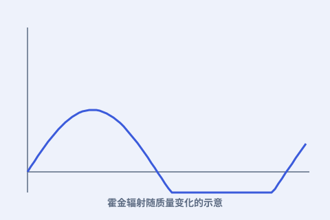

一、虚粒子对
量子世界里，真空中不断冒出又湮灭的“虚粒子对”。在黑洞边缘，其中一个可能被吞掉，另一个逃逸——看起来就像黑洞在发光。

二、霍金辐射
霍金算出：逃逸的粒子带走能量，相当于黑洞在向外辐射。这就是“霍金辐射”，让黑洞有了温度。
三、终会蒸发
辐射让黑洞缓慢失去质量；质量越小，温度越高、蒸发越快，最终可能以一阵爆发结束。
四、信息去哪了？
黑洞蒸发后，落进去的信息是否还在？这引出“黑洞信息悖论”，至今仍是理论物理的前沿。
量子世界里，真空中不断冒出又湮灭的“虚粒子对”。在黑洞边缘，其中一个可能被吞掉，另一个逃逸——看起来就像黑洞在发光。

霍金算出：逃逸的粒子带走能量，相当于黑洞在向外辐射。这就是“霍金辐射”，让黑洞有了温度。
辐射让黑洞缓慢失去质量；质量越小，温度越高、蒸发越快，最终可能以一阵爆发结束。
黑洞蒸发后，落进去的信息是否还在？这引出“黑洞信息悖论”，至今仍是理论物理的前沿。